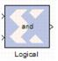

|
|
The Xilinx Logical block performs bitwise logical operations on 2, 3, or 4 fixed-point numbers. Operands are zero padded and sign extended as necessary to make binary point positions coincide; then the logical operation is performed and the result is delivered at the output port.In hardware this block is implemented as synthesizable VHDL. If you build a tree of logical gates, this synthesizable implementation is best as it facilitates logic collapsing in synthesis and mapping.